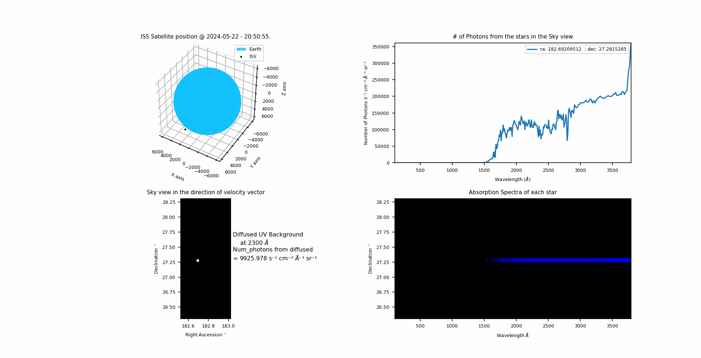

Statistical Isotropy violations in CMB
Guide: Tarun Souraeep, Director RRI
June 2024 - Present

Guide: Tarun Souraeep, Director RRI
June 2024 - Present
Guide: Manish Kumar Tamta, PhD IISc
May 2024-Aug2024
I was selected for the KSP 5.0 (Krittika Summer Projects by Krittika @ IIT Bombay) and chose this project as per my preference.
Guide: Jayant Murthy, Rekhesh Mohan from IIA Bangalore
Jan 2024 -- Dec 2024
I worked on a sky simulations project for UV space missions for spectrometry simulations of the sky observed by a satellite in Earth orbit.
Using the TLE for any given Satellite, I can generate its orbit around earth to observe the stellar sky within a given field of view of a detector on the Satellite.
I use the Hipparcos catalogue to obtain stars in the field of view and their observed astrometric and photometric data. Then we find the stars Temperature, radius, effective Gravity and Distance to the star using this info.
I use these to then find intrinsic Spectra of each star from the Castelli-Kurucz Atlas. then convert this to observed spectrum by the satellite and animating a simulation to show the satellite orbit, stars in field of view and their UV Spectra.
Further I added Cosmic diffused UV background from the Interstellar dust Scattering of UV light to the Simulation. I am now working to display spectrum of the diffused background and adding zodiacal UV light to the FOV.

Guide: Nirmal Raj from CHEP, IISc Bangalore
May 2023 -- July 2023
I worked on recreating the results of the Big Bang Nucleosynthesis, "Schramm Plot" for D, He-4 and He-3 abundances during BBN.